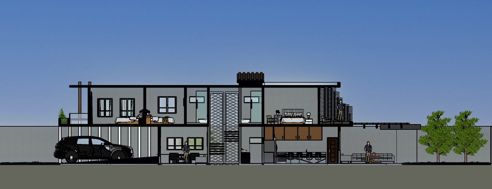
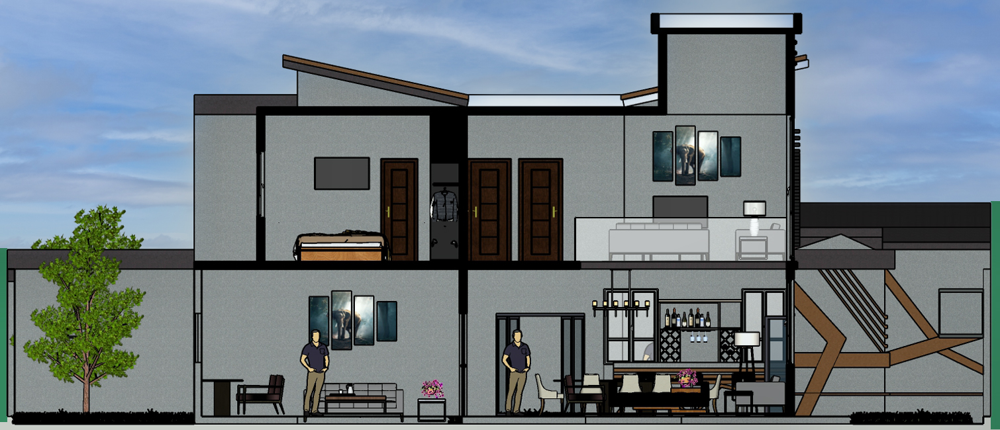
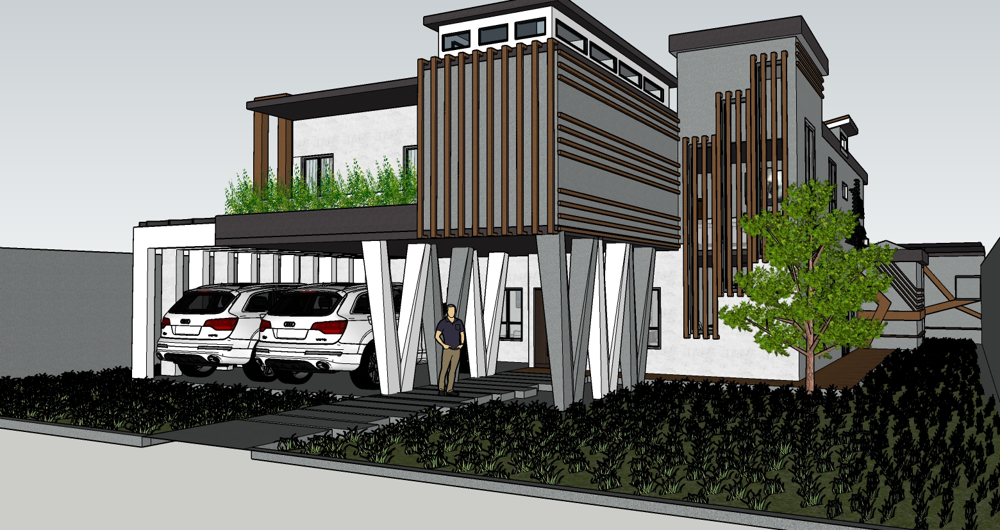
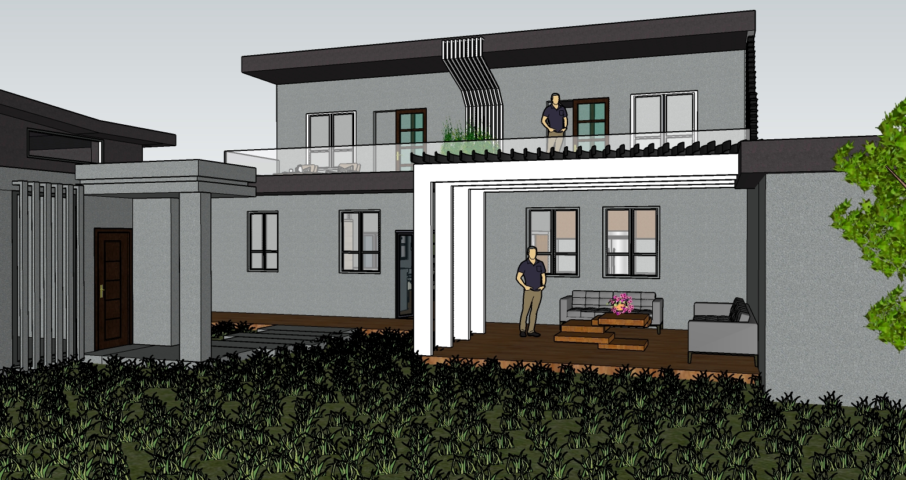
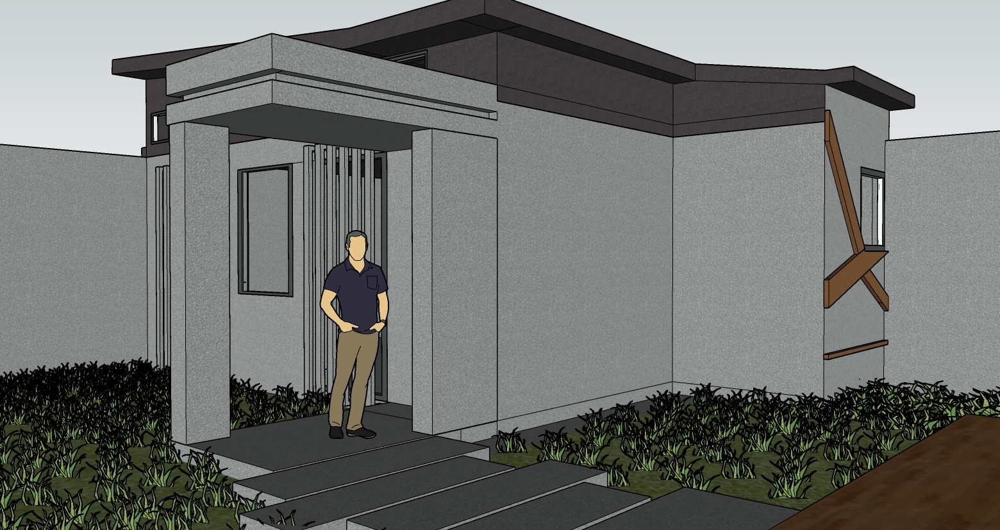
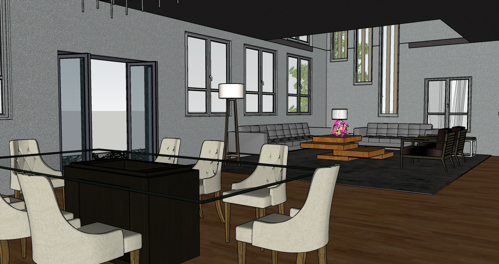
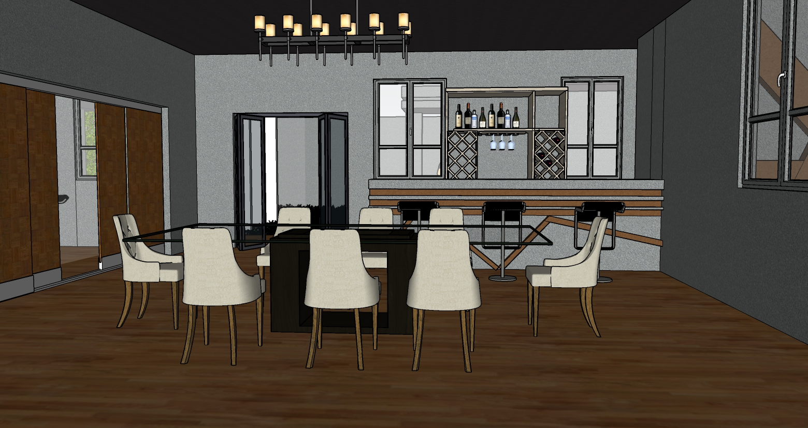
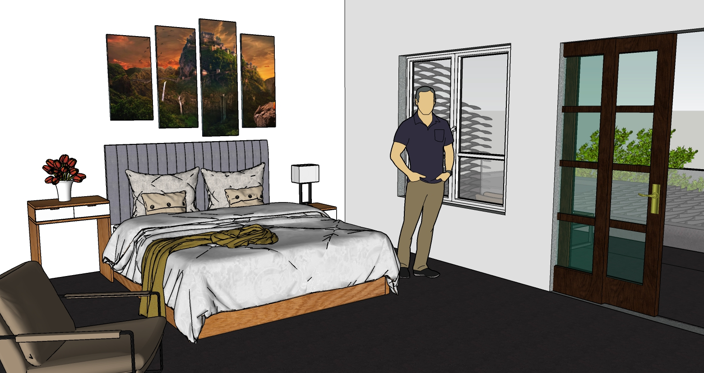

Instagram
Instagram  Facebook
Facebook Linkedin
Linkedin UMG
UMGVivienda
Unifamiliar
La vivienda unifamiliar se encuentra ubicada en la zona 14 enfoncado para una familia de clase media alta. Cuenta con carpot, una oficina privada, sala familiar, sala familiar exterior, sala privada, comedor, cocina, área de juegos, cuenta con 3 habitaciónes con su baño privado y entre ellos una habitación master con su baño privado y walking closet de igual manera un área servicio en la cual se encuentra la habitación para trabajadoras de servicio, patio y la lavanderia.
Sistema Constructivo
1 / 3

2 / 3

❮
❯

Planta Arquitectónica
La vivienda cuenta con un garage para dos vehículos grandes, un estudio con un sofa para poder descansar y a la vez tener reuniones de negocio,
un escritorio para poder trabajar en proyectos personales. En el área social de la sala encontramos butacas para una capacidad de 7 personas ,el área del comedor cuenta de igual manera con
una capacidad para 8 personas y una barra para que las personas puedan degustar de bebidas alcohólicas y un área de cava para poder alamacenar los vinos. En el primer nivel también se
encuentra un baño para visitas una cocina completa la cual contiene un desayunador por si en algun caso hay alguna visita y las personas no quieran salir a saludar pueden comer tranquilamente
en la cocina. Tambien se consideraron varios aspectos tales como un dormitorio con el área de servicio con un baño completo, un patio para poder tender la ropa y la lavanderia para poder lavar
la ropa y poder tener el espacio necesario para planchar. En el área exterior encontramos una sala exterior bajo techo, jardín y una sala completamente de juegos con su baño propio.

Planta Arquitectónica
En el segundo nivel se encuentra como primer lugar la sala familiar mas privada que la sala del primer nivel y 4 habitaciones.
En la habitación máster que se encuentra arriba del área de garaje cuenta con una salida exterior, un espacio para una cama matrimonial, su propio walking closet con su baño privado
la cuál contiene una tina y ducha. En el dormitorio continuo al dormitorio master cuenta con su propia batería de baño armario propio e iluminación natural. En los dos dormitorios
restantes tienen una vista hacia el exterior con su propio balcon compartido pero dividio a través de un macetero para poder formar una especie de celosia. Cada uno de estos dormitorio
contiene su propia bateria de baños, armario y el espacio necesario para una cama matrimonial.

Planta Arquitectónica
Nivel 1
La vivienda cuenta con un garage para dos vehículos grandes, un estudio con un sofa para poder descansar y a la vez tener reuniones de negocio,
un escritorio para poder trabajar en proyectos personales. En el área social de la sala encontramos butacas para una capacidad de 7 personas ,el área del comedor cuenta de igual manera con
una capacidad para 8 personas y una barra para que las personas puedan degustar de bebidas alcohólicas y un área de cava para poder alamacenar los vinos. En el primer nivel también se
encuentra un baño para visitas una cocina completa la cual contiene un desayunador por si en algun caso hay alguna visita y las personas no quieran salir a saludar pueden comer tranquilamente
en la cocina. Tambien se consideraron varios aspectos tales como un dormitorio con el área de servicio con un baño completo, un patio para poder tender la ropa y la lavanderia para poder lavar
la ropa y poder tener el espacio necesario para planchar. En el área exterior encontramos una sala exterior bajo techo, jardín y una sala completamente de juegos con su baño propio.
Planta Arquitectónica
Nivel 2
En el segundo nivel se encuentra como primer lugar la sala familiar mas privada que la sala del primer nivel y 4 habitaciones.
En la habitación máster que se encuentra arriba del área de garaje cuenta con una salida exterior, un espacio para una cama matrimonial, su propio walking closet con su baño privado
la cuál contiene una tina y ducha. En el dormitorio continuo al dormitorio master cuenta con su propia batería de baño armario propio e iluminación natural. En los dos dormitorios
restantes tienen una vista hacia el exterior con su propio balcon compartido pero dividio a través de un macetero para poder formar una especie de celosia. Cada uno de estos dormitorio
contiene su propia bateria de baños, armario y el espacio necesario para una cama matrimonial.

Sección Longitudinal
El corte longitudinal de la vivienda se encuentra en el sentido mas largo abarcando desde el garage hasta el jardin. Con el corte se logra apreciar la forma en que el mobiliario ira distribuido en los diferentes ambientes pero de igual manera nos da un acercamiento en su forma estructural. podemos ver una composicion en el techo de losas planas y techo a dos aguas para poder darle una mayor iluminación natural a los ambientes.

Sección Transversal
La sección transversal en el sentido mas corto del terreno observamos principalmente la forma en que irán los techos, nos ayuda a identificar las alturas de los ambientes en este caso el corte con mayor altura es la que se posiciona en el lado superior derecho para poder darle una sensación de mas espacio en el sentido vertical a las área de las salas por lo cuál en el primer nivel la sala cuenta con un techo a doble altura. Los baños de los dormitorios cuenta tanto con una iluminacion lateral como superior a través de linternillas.

Vista Exterior
El estilo arquitectónico que se implemento en el proyecto es minimalista.
Se jugo con una serie de planos seriados en la parte del garage siendo estas complentamentamente de concreto. Se implemento una celosia metálica color
cafe para poder tener una protección solar teniendo la función de parteluz para poder tener una iluminación natural indirecta en el interior y no afectar el confort de los usuarios.
Vista Exterior
Ingreso a la Vivienda
El estilo arquitectónico que se implemento en el proyecto es minimalista.
Se jugo con una serie de planos seriados en la parte del garage siendo estas complentamentamente de concreto. Se implemento una celosia metálica color
cafe para poder tener una protección solar teniendo la función de parteluz para poder tener una iluminación natural indirecta en el interior y no afectar el confort de los usuarios.

Vista Exterior
En el jardín de la vivienda contiene una sala exterior al aire libre con capacidad para 6
personas para poder relajarse viendo el área verde. En el segundo nivel se observa la salida de ambas habitaciones estos cuentas con dos
butacas exteriores para poder disfrutar al aire libre.
Vista Exterior
Jardín
En el jardín de la vivienda contiene una sala exterior al aire libre con capacidad para 6
personas para poder relajarse viendo el área verde. En el segundo nivel se observa la salida de ambas habitaciones estos cuentas con dos
butacas exteriores para poder disfrutar al aire libre.

Vista Exterior
La sala de juegos se ubica en la parte posterior del jardin de la vivienda este cuenta con un caminamiento hacia la entrada de la vivienda,
cuenta con mobiliario para poder desarrollar actividades tales como juegos de mesa .
En el exterior se encuentra compuesto por techos inclinados, la ventaneria se encuentra compuesta por parteluces para la proteccion de los rayos del sol.
Vista Exterior
Sala de Juegos
La sala de juegos se ubica en la parte posterior del jardin de la vivienda este cuenta con un caminamiento hacia la entrada de la vivienda,
cuenta con mobiliario para poder desarrollar actividades tales como juegos de mesa .
En el exterior se encuentra compuesto por techos inclinados, la ventaneria se encuentra compuesta por parteluces para la proteccion de los rayos del sol.

Vista Interior
La sala principal se encuentra compuesta por una serie de ventanerias para poder tener la mayor cantidad de iluminación natural.
Al ser de estructura metálica permite que en el interior se puedan tener grandes lucesde aproximadamente 9 metros por lo cuál es de gran ayuda para poder dar una sensasición
de amplitud entre los ambientes. El tipo de piso propuesto para esta área es duela de madera en combinación con los muros blancos.
Vista Interior
Sala-Comedor
La sala principal se encuentra compuesta por una serie de ventanerias para poder tener la mayor cantidad de iluminación natural.
Al ser de estructura metálica permite que en el interior se puedan tener grandes lucesde aproximadamente 9 metros por lo cuál es de gran ayuda para poder dar una sensasición
de amplitud entre los ambientes. El tipo de piso propuesto para esta área es duela de madera en combinación con los muros blancos.

Vista Interior
La vivienda cuenta con una barra en la que los usuarios pueden debustar de su bebida alcohólica favorita de igual manera cuenta con una cava.
El comedor tiene espacio para 8 personas cuenta con una iluminación natural para aprovechar y tener ahorro de energía eléctrica .
Vista Interior
Barra-Comedor
La vivienda cuenta con una barra en la que los usuarios pueden debustar de su bebida alcohólica favorita de igual manera cuenta con una cava.
El comedor tiene espacio para 8 personas cuenta con una iluminación natural para aprovechar y tener ahorro de energía eléctrica .

Vista Interior
El dormitorio se encuentra ubicado en la parte posterior de la vivienda es por ello que contiene una salida hacia el
jardín con dos butacas para poder disfrutar del aire fresco y poder relajarse. En el interior del dormitorio tiene la capacidad de una cama matrimonial con su mesa de noche,
el tipo de piso propuesto en esta área es de porcelanato color oscuro.